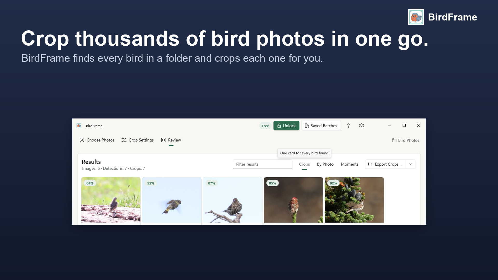

Batch crop bird photos on Windows
Choose a folder and the framing you want. BirdFrame finds hard-to-see birds and crops thousands of photos in one go. Each crop comes from the full-size original, and your originals stay untouched.
Windows 10 and 11. Free for up to 50 photos per run, with unlimited runs. Unlock larger batches for US$29.99 once. See the Store for local pricing.
On a Mac? Get BirdFrame for Mac.

Try it on your photos
Crop a folder of photos
See how to batch crop and save copies of your originals.
Open and crop RAW photos
From opening a RAW file in Windows to exporting a batch of full-size crops.
Watch the recorded workshop
Learn how tight to crop and see the folder workflow. Captions and slides are included.